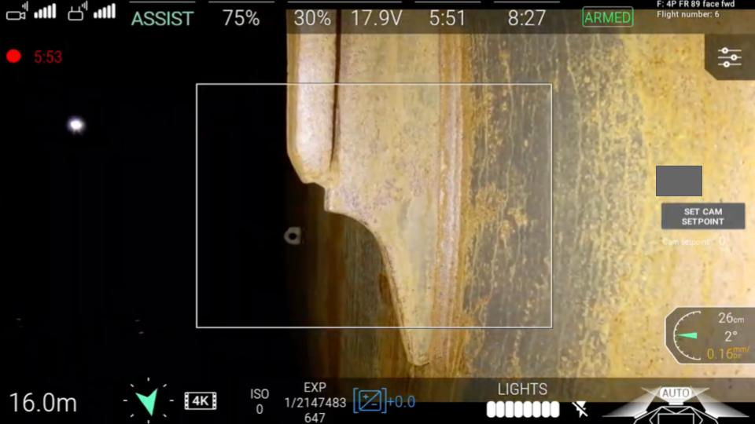

Remote Close-up Survey
Class society approved drone service provider
Our team has completed more than 50 visual surveys using drones inside tanks, all around the world. Our experience means we complete the job safely and efficiently, everytime.
Our team has completed more than 50 visual surveys using drones inside tanks, all around the world. Our experience means we complete the job safely and efficiently, everytime.
C-Bird’s drone technology enables close-up surveys of all areas of a cargo oil tank. Our drones use onboard lighting, and can be operated from deck. A valuable data set is provided to the attending surveyor, who can make an assessment of COT condition and examine only the critical areas.
Coated ballast tanks are subject to harsh seawater and should be kept in very good condition. In previous projects, C-Bird has uncovered several unidentified defects and immediate remedial works which could be implemented while still in the dry dock, saving costs for the vessel owner.
Historically, pipework inspections have been conducted by the attending surveyor physically crawling inside, a challenging, dangerous task. Finally, sufficient close-up imagery can now be obtained without requiring confined space working. C-Bird has completed many large diameter pipework surveys as part of Class requirements.
Founded in 2019 in Scotland. Based on the passion for robotic solutions, C-Bird strives for better data acquisition, more valuable asset insights while driving down costs, removing yard limitations, and minimizing the need for personnel to work in confined spaces.
C-bird Use The Latest Visual Inertial Odometry (V.I.O). Technology To Accurately Localize And Process Inspection Data Into Easily Digestible And Actionable Information. Digital information can be transferred easily into structural hull modelling software.
Our Unrivalled Record Of Deploying Innovative Drone Technologies In Marine Environments Coupled With Our Deep Understanding Of Class Requirements has been the key to success.